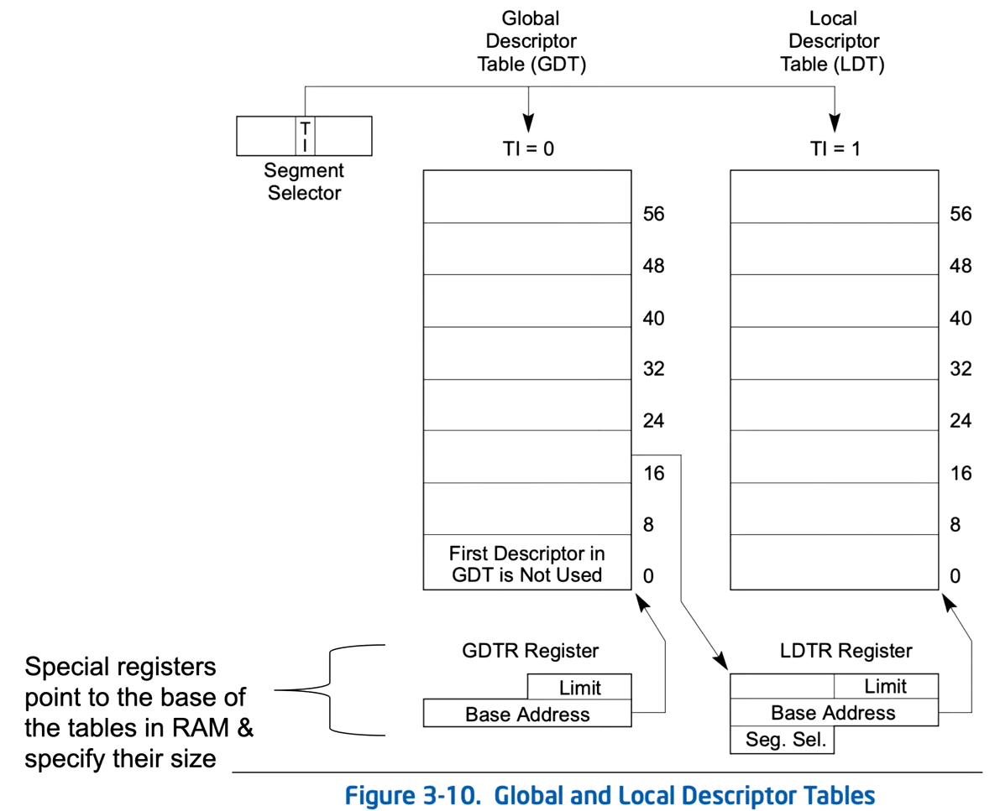

GDT and LDT are per proccesor.
The GDT and LDT are data structures used by the x86 processors to define memory segments, including code segments. These tables contain segment descriptors that specify the properties and attributes of the segments, such as their base address, limit, and access rights.
KGDTENRTY62 - Kernel GDT Entry 64
A struct used to view GDT records, in WinDbg:
dt -r (nt!_KGDTENTRY64)gdtr+(0x8*2) 2 being the index, can be replaced.

GDTR - Global Descriptor Table Register
Points at the location of the table

***In WinDbg, the upper bits are shown in gdtr and the lower bits in gdtl
LDTR - Local Descriptor Table Register- Points at the location of the table.
- LDTR acts as a Segment Selector - same bit map.
- LDTR has a visible and a hidden field, the hidden field is acquired from the GDT as catch.

The Segment selector may be LDTR or one of the SR's.
either one will contain '0' in the Table Indicator, in order to address GDT.
The GDT will fill the Segment selector's hidden part, with detail of base, limit and attributes of the LDT.